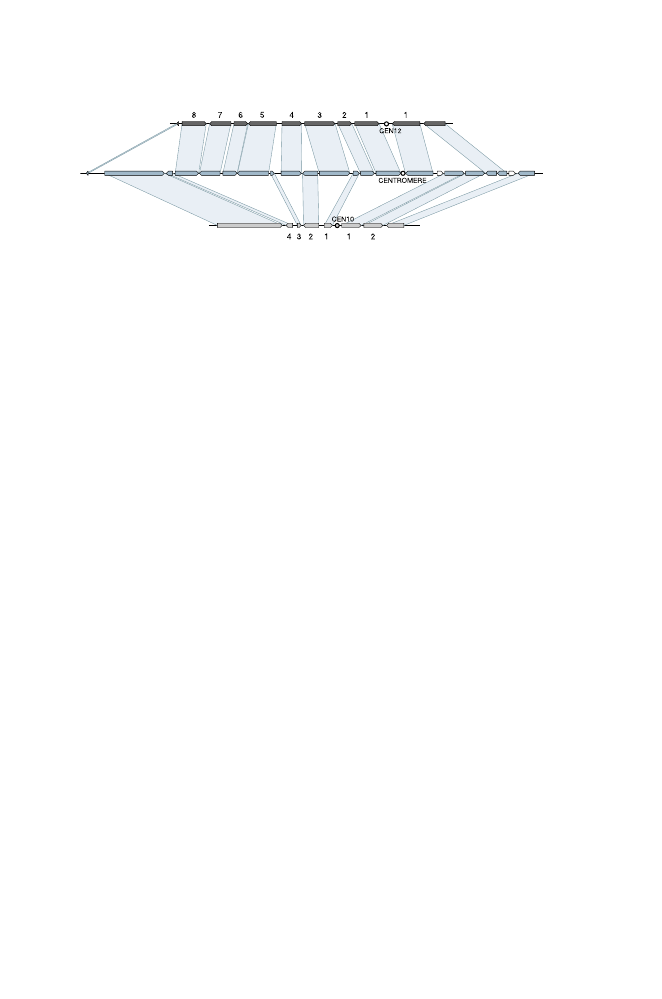

430
14 Comparative Genomics
Scer12
Kwal5
Scer10
YLR002
YLL009
YJR003
YJL005
Fig. 14.11.
Example of duplicate mapping of centromeric regions from
S. cere-
visiae
chromosomes Scer12 and Scer10 to the same region near the centromere of
K. waltii
chromosome Kwal5. Although neither
S. cerevisiae
chromosome has all of
the genes found in this region of Kwal5, the gene orders are the same as in Kwal5,
and the genes of
S. cerevisiae
interleave to tile almost the entire portion of Kwal5
shown. Excerpted, with permission, from Kellis M et al. (2004)
Nature
428:617–624.
Copyright 2004 ES Lander.
but
transitive homology
can be inferred: since region A
is homologous to B
and region B
is homologous to D
, we conclude that A
is homologous to D
.
This type of analysis gives a better assessment of multiplication levels.
This method has been used to determine the number of whole-genome
duplications in the history of
Arabidopsis
(Simillion et al., 2002). Multipli-
cation levels for direct homologies of collinear gene clusters measured along
the genome mostly ranged from two to four. When transitive homologies were
included, many regions with multiplication levels of five to eight were ob-
served. This suggested that three whole-genome duplication events had oc-
curred (5
>
2
2
and 8 = 2
3
). The fraction of synonymous substitutions per
synonymous site, K
s
, was used to estimate dates of 75, 160, and 220 million
years ago for these duplication events.
Other methods for identifying and dating genome duplication events are
available (Van de Peer, 2004). Some of these methods employ clusters of ho-
mologous genes that appear together at different chromosomal locations, but
not necessarily in the same order. The statistical significance of these ho-
mologous clusters can be estimated by randomly shuffling the gene map and
identifying any homologous clusters that appear. For each pair of homologs,
additional homologs closer than a specified distance (measured either by win-
dow size or by the number of unduplicated genes that separate them) con-
stitute randomly-generated gene clusters. The probability of observing these
gene clusters is approximated after 1000 such simulations. For recent research
on this and related statistical problems, see Durand and Sankoff (2003).
Analysis of the human genome by using clusters of paralogous genes, or
paralogons, indicates that at least one whole-genome duplication has occurred
in the chordate lineage (McLysaght et al., 2002). The estimated date for this
duplication is 350-650 million years ago. As additional complete genome se-
quences from throughout the phylogenetic tree become available, it will be